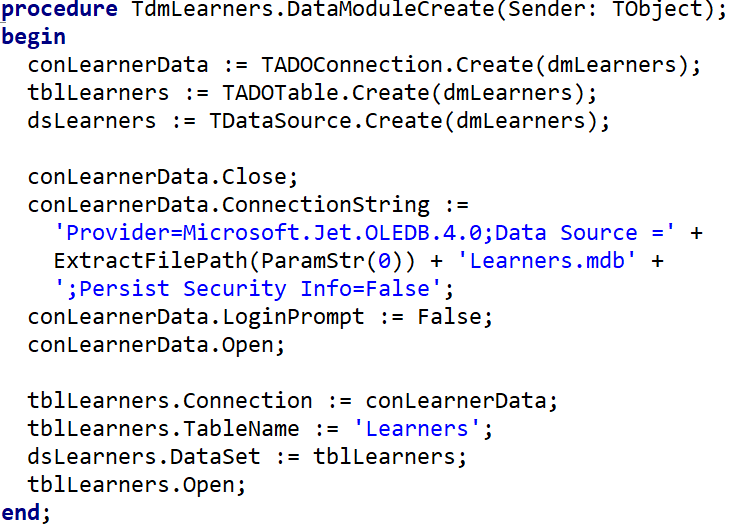

A printable guide to the practical Delphi programming for Grade 11 (Paper 1 skills), with the year planner and exam extras.
Imagine you need to store 30 student marks. Without arrays you would need 30 separate variables — iMark1, iMark2, … iMark30. With an array, one name stores them all: arrMarks[1..30]. Arrays are a Grade 11 Term 1 topic.
A one-dimensional array is a structured data type that stores a fixed number of values of the same data type under a single variable name, with each individual value accessed using its own index (a whole number giving that value's position in the list).
Think of an array like a train: each carriage (box) holds one value and is numbered by its index — the index tells you exactly where to find that value.
Remember a single variable is one cup. An array is a whole matching dinner set — say 6 cups — that all share one name and are numbered: arrCups[1], arrCups[2] … arrCups[6]. Every item is the same type (all cups), just at a different index (place-setting number).
So instead of naming 30 separate cups cup1, cup2, …, you keep one name and pick the one you want by its number: arrMarks[7] is simply "the mark at place setting 7".
arrName : array [lowerIndex..upperIndex] of DataType;var
arrNames : array [1..30] of String;
arrMarks : array [1..30] of Integer;
arrPrices : array [0..9] of Real;You don't always know in advance exactly how many items you will store. A common trick is to declare a constant for the maximum size, then use it as the upper index. If the size needs to change later, you only edit one line.
The constant must be declared above the array declaration (it can go just above type in the interface section), otherwise Delphi won't know what Max means yet.
const
Max = 100; // maximum possible learners
var
arrNames : array [1..Max] of String;
iCount : Integer; // how many are ACTUALLY usedKeep a separate counter (iCount) for how many elements are really in use, and loop 1 to iCount instead of 1 to Max.
A dynamic array has no fixed size when declared — you set (and can later change) its length while the program runs with SetLength. This is perfect when the number of items is only known at runtime (e.g. after reading a file).
Unlike array[1..30], a dynamic array is always 0-based. If you SetLength(arr, 5) the valid indexes are 0,1,2,3,4. Use Low(arr) for the first index (0) and High(arr) for the last (length − 1).
| Routine | Purpose |
|---|---|
SetLength(arr, n) | Sets (or changes) the array to hold n elements |
Length(arr) | Returns the current number of elements |
Low(arr) | First valid index (always 0 for dynamic arrays) |
High(arr) | Last valid index (Length − 1) |
var
arrNum : array of Integer; // note: NO index range given
i : Integer;
begin
SetLength(arrNum, 5); // now holds 5 ints, index 0..4
for i := Low(arrNum) to High(arrNum) do
arrNum[i] := i * 2; // 0, 2, 4, 6, 8
SetLength(arrNum, 8); // grow to 8 — existing values are kept
end;arrNames[1] := 'Alice';
arrNames[2] := 'Bob';
arrNames[3] := 'Callie';const
arrDays : array [1..7] of String =
('Mon', 'Tue', 'Wed', 'Thu', 'Fri', 'Sat', 'Sun');for i := 1 to 30 do
arrNames[i] := InputBox('Name', 'Enter name:', '');// Display all
for i := 1 to Length(arrMarks) do
memOut.Lines.Add(IntToStr(arrMarks[i]));
// Sum and average
iTotal := 0;
for i := 1 to Length(arrMarks) do
iTotal := iTotal + arrMarks[i];
rAvg := iTotal / Length(arrMarks);Writing your own loop to total or average an array works, but Delphi's Math unit already has ready-made functions that do the same job in one line.
| Function | Returns |
|---|---|
Sum(arr) | Total of every element |
Mean(arr) | Average of every element |
MaxValue(arr) | The largest value in the array |
MinValue(arr) | The smallest value in the array |
uses Math; // add this to the uses clause first
rAvg := Mean(arrPrices);
rTotal := Sum(arrPrices);
rHighest := MaxValue(arrPrices);
rLowest := MinValue(arrPrices);These four functions only accept an array whose elements are declared as Double — not Integer, and not the general-purpose Real. If your array holds integers, either redeclare it as array[1..n] of Double, or stick to your own loop.
Every index used so far has just meant "the Nth item in the list" — arrNames[3] is simply whoever happens to be third. Sometimes, though, it's more useful to let the index itself carry meaning. If arrVotes[4] always holds the vote count for competitor number 4, the index is the competitor number, not just a position in a queue.
An index isn't limited to whole numbers — any ordinal type can be used, including Char. This is handy whenever the letter itself is what you want to look values up by, e.g. tallying how many learners scored each grade symbol (A to F) in a test:
var
arrSymbolCount : array ['A'..'F'] of Integer;
cGrade : Char;
begin
cGrade := 'A';
while cGrade <= 'F' do
begin
arrSymbolCount[cGrade] := 0; // reset every element to zero first
cGrade := succ(cGrade); // moves 'A' to 'B', 'B' to 'C', and so on
end;
// later, whenever a learner's symbol is worked out:
Inc(arrSymbolCount[cLearnerSymbol]);succ(cGrade) gives the character that comes after cGrade in the alphabet; pred(cGrade) gives the one before it. They work like +1/-1 for any ordinal type, including Char, where plain arithmetic isn't allowed.
A RadioGroup's ItemIndex always starts counting from 0 for its first button — but an array you declare yourself might start at 1. When you use ItemIndex to pick an element to update (for example, tallying votes for a menu option), you need to decide which convention your array follows and stay consistent:
Array declared [0..4] | Array declared [1..5] |
|---|---|
iChoice := rgpMenu.ItemIndex;Inc(arrVotes[iChoice]); |
iChoice := rgpMenu.ItemIndex + 1;Inc(arrVotes[iChoice]); |
With the [1..5] version, the array index is always one more than ItemIndex, because ItemIndex itself never moves off its 0-based counting — only your array's lower bound changes.
Delphi will happily compile arrNames[50] even if arrNames was declared as [1..30] — the mistake only surfaces while the program is running, as a range-check/IndexOutOfBounds error the moment that line executes. Whenever an index comes from user input or from a component like ItemIndex, validate it against the array's real bounds before using it.
Every character has a numeric code. Ord(c) gives the code of a character and Chr(n) turns a code back into a character. A few codes worth knowing:
| Character | Code |
|---|---|
' ' (space) | 32 |
'0' to '9' | 48 to 57 |
'A' to 'Z' | 65 to 90 |
'a' to 'z' | 97 to 122 |
Because the code is a whole number, it can be used directly as an index. A frequency array keeps one counter per possible character, and the character's code decides which counter to add to. No searching is needed — the character takes you straight to its own counter.
var
arrFreq : array [0..127] of Integer;
sText : string;
i : Integer;
begin
sText := 'Mzansi';
for i := 0 to 127 do
arrFreq[i] := 0; // every counter starts at zero
for i := 1 to Length(sText) do
Inc(arrFreq[Ord(sText[i])]); // the code picks the counter
for i := 0 to 127 do
if arrFreq[i] > 0 then
memOut.Lines.Add(Chr(i) + ': ' + IntToStr(arrFreq[i]));
end;The array above only has room for codes 0 to 127. A character with a bigger code (for example some accented letters) would index outside the array and cause a range error. This pattern is meant for plain English text.
If you only care about the 26 letters, a 0..127 array wastes space. Convert to capitals first, then subtract the code of 'A' so that A becomes index 0, B becomes 1, and Z becomes 25. To display, reverse the calculation with Chr(Ord('A') + i).
var
arrLetters : array [0..25] of Integer;
sText : string;
cCh : Char;
i : Integer;
begin
sText := UpperCase('Springbok rugby');
for i := 0 to 25 do
arrLetters[i] := 0;
for i := 1 to Length(sText) do
begin
cCh := sText[i];
if cCh IN ['A'..'Z'] then // ignore spaces and symbols
Inc(arrLetters[Ord(cCh) - Ord('A')]);
end;
for i := 0 to 25 do
if arrLetters[i] > 0 then
memOut.Lines.Add(Chr(Ord('A') + i) + ' = ' + IntToStr(arrLetters[i]));
end;Two words are anagrams when they use exactly the same letters the same number of times (ALERT and ALTER). Use one 26-slot array as a balance sheet: add 1 for every letter of the first word, subtract 1 for every letter of the second. If the words are anagrams, every slot ends on 0. Assume both words are already in capitals with no spaces.
var
arrBalance : array [0..25] of Integer;
sOne, sTwo : string;
i : Integer;
bAnagram : Boolean;
begin
sOne := 'ALERT';
sTwo := 'ALTER';
for i := 0 to 25 do
arrBalance[i] := 0;
for i := 1 to Length(sOne) do
Inc(arrBalance[Ord(sOne[i]) - Ord('A')]);
for i := 1 to Length(sTwo) do
Dec(arrBalance[Ord(sTwo[i]) - Ord('A')]);
bAnagram := True;
for i := 0 to 25 do
if arrBalance[i] <> 0 then
bAnagram := False;
end;A pangram is a sentence that contains every letter of the alphabet at least once. Use a Boolean array with one slot per letter, all starting at False. Every time you meet a letter, switch its slot to True. Repeating a letter does not help you fill in a missing one, so the sentence is a pangram only if all 26 slots end up True.
var
arrSeen : array [0..25] of Boolean;
sLine : string;
cCh : Char;
i : Integer;
bPangram : Boolean;
begin
sLine := 'Pack my box with five dozen liquor jugs.';
for i := 0 to 25 do
arrSeen[i] := False;
for i := 1 to Length(sLine) do
begin
cCh := UpCase(sLine[i]);
if cCh IN ['A'..'Z'] then
arrSeen[Ord(cCh) - Ord('A')] := True;
end;
bPangram := True;
for i := 0 to 25 do
if not arrSeen[i] then
bPangram := False;
end;Counting letters, comparing two words and checking for a full alphabet all use the same trick: Ord(letter) - Ord('A') turns a letter into an array index. None of these need sorted data.
bFound := False;
for i := 1 to Length(arrNames) do
if arrNames[i] = sSearch then
begin
ShowMessage('Found at position ' + IntToStr(i));
bFound := True;
Break;
end;
if not bFound then
ShowMessage('Not found');The code above stops the loop with Break as soon as one match turns up — correct when you only expect a single match (e.g. one learner's ID number). If instead you needed every occurrence (e.g. every learner who chose "Physics"), you would drop the flag and Break, and simply let the loop run to the end, adding each match found along the way. Once the array is sorted, binary search (below) beats both approaches for speed.
You can also do a search without a Boolean variable at all. Array positions start at 1, so 0 can never be a real position. That makes 0 a perfect way to say "nothing found yet". Set the answer to 0, and only save a position if the answer is still 0 — this keeps the first match even though the loop runs to the end.
iPos := 0;
for i := 1 to iCount do
if (arrNames[i] = sSearch) and (iPos = 0) then
iPos := i;
if iPos > 0 then
ShowMessage(sSearch + ' is at position ' + IntToStr(iPos))
else
ShowMessage('Not found');Neither linear search version needs the array to be sorted.
Binary search is much faster than linear — it halves the search range each step. The array must be sorted first. We are searching for 23 in the array [2, 5, 8, 12, 16, 23, 38, 56, 72, 91].
iLow := 1;
iHigh := Length(arrNums);
bFound := False;
while (iLow <= iHigh) and not bFound do
begin
iMid := (iLow + iHigh) div 2;
if arrNums[iMid] = iTarget then
bFound := True
else if arrNums[iMid] < iTarget then
iLow := iMid + 1
else
iHigh := iMid - 1;
end;
if bFound then
ShowMessage('Found at position ' + IntToStr(iMid));Sorting a string array with > and < only makes sense once you know what Delphi is actually comparing. It never looks at "the alphabet" directly — it walks each string letter by letter and compares the underlying ASCII value of each character, stopping at the first pair of letters that differ.
| Comparison | Result | Why |
|---|---|---|
'Alice' = 'alice' | False | 'A' is ASCII 65, 'a' is ASCII 97 — string comparison is case-sensitive. |
'Bob' < 'Eve' | True | First letters differ straight away: 'B' (66) is less than 'E' (69). |
'Farai' < 'Farm' | True | The first three letters ('F','a','r') match, so the 4th letter decides: 'a' (97) is less than 'm' (109). |
'Gio' > 'Gi' | True | Delphi pads the shorter string with trailing spaces to compare them — so 'Gi' becomes 'Gi ', and 'o' (111) beats a space (32). |
Because every uppercase letter has a lower ASCII value than every lowercase letter, an unsorted mix of cases will group all the capitalised words before any lowercase word once sorted — not what most people expect from "alphabetical order". If that matters, convert both sides to the same case (e.g. with UpperCase()) before comparing or sorting.
Bubble sort compares adjacent elements and swaps them if they are in the wrong order. After each full pass, the largest unsorted value "bubbles" to its correct position at the end. Array: [5, 3, 8, 1, 9] — sorting ascending.
for i := Length(arrNums) - 1 downto 1 do
for j := 1 to i do
if arrNums[j] > arrNums[j + 1] then
begin
iTemp := arrNums[j];
arrNums[j] := arrNums[j + 1];
arrNums[j + 1] := iTemp;
end;The version above always completes every single pass, even once the array is already sorted. A smarter bubble sort keeps a Boolean flag and quits the moment a whole pass goes by with no swaps at all — because that can only happen when the array is fully sorted:
iEndCounter := Length(arrNums) - 1;
repeat
bSwapped := False;
for j := 1 to iEndCounter do
if arrNums[j] > arrNums[j + 1] then
begin
iTemp := arrNums[j];
arrNums[j] := arrNums[j + 1];
arrNums[j + 1] := iTemp;
bSwapped := True;
end;
Dec(iEndCounter); // the tail end is sorted, so search one less item next time
until not bSwapped; // no swaps this pass = fully sorted, stop loopingSelection sort finds the smallest remaining element and swaps it into its correct position. Same array: [5, 3, 8, 1, 9].
for i := 1 to Length(arrNums) - 1 do
begin
iMin := i;
for j := i + 1 to Length(arrNums) do
if arrNums[j] < arrNums[iMin] then
iMin := j;
if iMin <> i then
begin
iTemp := arrNums[i];
arrNums[i] := arrNums[iMin];
arrNums[iMin] := iTemp;
end;
end;Two arrays are parallel when the same index refers to the same "record" — e.g. arrNames[3] and arrMarks[3] both belong to the same student. When you sort one, you must sort both to keep them in sync.
At a table, each person has their own cup, plate and bowl — three parallel dinner sets, where place setting [3] in each belongs to the same person. If that person moves to a different seat, they take all three of their things with them — you never leave their cup behind while their plate moves.
Sorting parallel arrays works exactly the same way: whenever the sort swaps two items in arrNames, you must swap the same two indexes in arrMarks (and every other parallel array) — so each student keeps their own name and their own mark together.
for i := 1 to Length(arrNames) - 1 do
for j := i + 1 to Length(arrNames) do
if arrNames[i] > arrNames[j] then
begin
// Swap both arrays at the same time
sTemp := arrNames[i]; arrNames[i] := arrNames[j]; arrNames[j] := sTemp;
iTemp := arrMarks[i]; arrMarks[i] := arrMarks[j]; arrMarks[j] := iTemp;
end;An array of fixed size cannot really "grow" or "shrink", so these algorithms work with a count variable (iCount) that says how many slots are actually in use. The array is declared bigger than you need (for example array[1..Max]), and everything after position iCount is simply ignored. Always loop to iCount, never to Max.
To squeeze a value into the middle, you first have to make a gap. Shift the elements to the right, starting from the end. If you started at the front you would copy the same value over and over and destroy the data.
iCount < Max).iCount down to the insert position, copying each element one place to the right.Inc(iCount).if iCount < Max then
begin
for i := iCount downto iPlace do
arrScores[i + 1] := arrScores[i]; // shift right, last element first
arrScores[iPlace] := iNew; // drop the new value into the gap
Inc(iCount);
end;
// with iPlace = 3 and iNew = 70 the used part is now [45, 62, 70, 78, 90]Deleting works in the opposite direction. Shift everything after the deleted position one place to the left, starting from the front, so the next value overwrites the one you are removing. Then reduce the count.
for i := iPlace to iCount - 1 do
arrScores[i] := arrScores[i + 1]; // shift left, first element first
Dec(iCount);
// with iPlace = 2 the used part is now [45, 70, 78, 90]Insert shifts right, from the end (downto). Delete shifts left, from the front (to). Mixing the directions overwrites values you still need. Also remember the count: forgetting Inc(iCount) or Dec(iCount) means your later loops will miss the new value or show a leftover one.
Instead of deleting from the original, build a second array that only receives a value if it is not already in there. For each value in the original, search the new array. If it was not found, append it.
iNewCount := 0;
for i := 1 to iCount do
begin
bDuplicate := False;
for j := 1 to iNewCount do
if arrNew[j] = arrRoutes[i] then
bDuplicate := True;
if not bDuplicate then
begin
Inc(iNewCount);
arrNew[iNewCount] := arrRoutes[i];
end;
end;The first occurrence of each value is kept, and the original order is preserved. Make sure arrNew is declared big enough to hold as many values as the original. The data does not need to be sorted.
Joining two arrays end to end is simple: copy the first one into the result, then copy the second one starting just after it. The result is not sorted — it is just list A followed by list B.
for i := 1 to iCountA do
arrC[i] := arrA[i];
for i := 1 to iCountB do
arrC[iCountA + i] := arrB[i];
iCountC := iCountA + iCountB;If both arrays are already sorted ascending, you can merge them into one sorted array without sorting again. Keep one position marker per input array (i for A, j for B) and one for the result (k). Compare the two values the markers point at, copy the smaller one and move only that marker forward. When one array runs out, copy whatever is left of the other.
| Step | A[i] | B[j] | Copied to result |
|---|---|---|---|
| 1 | 3 | 4 | 3 (A is smaller) |
| 2 | 8 | 4 | 4 |
| 3 | 8 | 9 | 8 |
| 4 | 15 | 9 | 9 |
| 5 | 15 | 20 | 15 — A is now finished |
| left over | – | 20, 25 | 20, 25 |
i := 1; j := 1; k := 0;
while (i <= iCountA) and (j <= iCountB) do
begin
Inc(k);
if arrA[i] <= arrB[j] then
begin
arrC[k] := arrA[i];
Inc(i);
end
else
begin
arrC[k] := arrB[j];
Inc(j);
end;
end;
// only one of these two loops will actually run
while i <= iCountA do
begin
Inc(k);
arrC[k] := arrA[i];
Inc(i);
end;
while j <= iCountB do
begin
Inc(k);
arrC[k] := arrB[j];
Inc(j);
end;
// arrC = [3, 4, 8, 9, 15, 20, 25]| Algorithm | Needs sorted data? |
|---|---|
| Linear search (with or without a flag) | No |
| Binary search | Yes |
| Insert at a given position, delete at a given position | No (insert at the correct position to keep an already-sorted array sorted) |
| Remove duplicates (second array method) | No |
| Concatenate two arrays | No (and the result is not sorted) |
| Merge two sorted arrays | Yes — both inputs must be sorted the same way |
| Frequency, anagram and pangram arrays | No |
Delphi has built-in functions for working with dates — required for Grade 11 Term 1.
IsLeapYear, YearOf, MonthOf and DayOf live in the DateUtils unit. Add uses DateUtils; near the top of your unit, or Delphi will report "undeclared identifier" when you try to use them.
| Function | Returns | Example & Output |
|---|---|---|
Now | Current date & time (TDateTime) | lblDate.Caption := DateToStr(Now) → '2025/05/30' |
DateToStr(d) | Date as formatted string | DateToStr(dtpBirth.Date) → '2008/03/15' |
TimeToStr(t) | Time as formatted string | TimeToStr(Now) → '14:32:07' |
StrToDate(s) | String → TDateTime | StrToDate('2024/05/01') |
IsLeapYear(y) | Boolean (True/False) | IsLeapYear(2024) → True |
YearOf(d) | Integer year | YearOf(dtpDate.Date) → 2025 |
MonthOf(d) | Integer month (1–12) | MonthOf(Now) → 5 |
DayOf(d) | Integer day (1–31) | DayOf(Now) → 30 |
// Display today's date
lblToday.Caption := DateToStr(Now); // '2025/05/30'
// Calculate age in years
iAge := YearOf(Now) - YearOf(dtpBirth.Date); // e.g. 17
// Check leap year
if IsLeapYear(YearOf(Now)) then
ShowMessage('This is a leap year')
else
ShowMessage('Not a leap year');Sometimes you are asked to work without IsLeapYear. A year is a leap year when it is divisible by 400, or it is divisible by 4 but not by 100. So 2024 and 2000 are leap years; 1900 and 2026 are not.
bLeap := (iYear mod 400 = 0) or
((iYear mod 4 = 0) and (iYear mod 100 <> 0));Subtracting the two years, as in the quick example above, is only approximately right. It gives the age the person will be some time this year. If the birthday has not happened yet this year, the real age is one less. A birthday has not been reached when today's month is before the birth month, or the months are equal but today's day is before the birth day.
iAge := YearOf(dtToday) - YearOf(dtBorn);
if (MonthOf(dtToday) < MonthOf(dtBorn)) or
((MonthOf(dtToday) = MonthOf(dtBorn)) and (DayOf(dtToday) < DayOf(dtBorn))) then
Dec(iAge); // birthday still to come this year
// born 12 Aug 2008, today 3 May 2026: 2026 - 2008 = 18, birthday not reached, so 17The idea: turn each date into a single day number (how many days have passed since the start of year 1), then subtract. The earlier date gives the smaller number, so later minus earlier is the number of elapsed days. To build a day number:
iYear - 1. Each one has 365 days.DIV 4, then subtract the century years that are not leap years (DIV 100), then add back those divisible by 400 (DIV 400).function DayNumber(iYear, iMonth, iDay: Integer): Integer;
const
arrMonthLen : array [1..12] of Integer =
(31, 28, 31, 30, 31, 30, 31, 31, 30, 31, 30, 31);
var
iDone, m : Integer;
bLeap : Boolean;
begin
iDone := iYear - 1; // completed years
Result := iDone * 365 + iDone div 4 - iDone div 100 + iDone div 400;
bLeap := (iYear mod 400 = 0) or
((iYear mod 4 = 0) and (iYear mod 100 <> 0));
for m := 1 to iMonth - 1 do
Result := Result + arrMonthLen[m]; // completed months
if bLeap and (iMonth > 2) then
Inc(Result); // 29 Feb has already happened
Result := Result + iDay;
end;
// 25 Feb 2024 to 2 March 2024
iDays := DayNumber(2024, 3, 2) - DayNumber(2024, 2, 25); // 738947 - 738941 = 6Subtracting the two day numbers counts the days between the dates, so the starting day itself is not counted. If a question wants both the first and last day included, add 1. Check the working with 2024: 25 Feb to 29 Feb is 4 days, then 1 Mar and 2 Mar bring it to 6, because 2024 is a leap year.
Before a binary search will work, the array must be:
Binary search repeatedly halves the list, which only works if it is sorted first.
When you sort one of two parallel arrays, you must:
Parallel arrays share an index, so every swap must be applied to both to keep records together.
A bubble sort works by repeatedly comparing:
Bubble sort compares neighbouring (adjacent) elements and swaps them if out of order.
Text files allow your Delphi program to save and load data that persists between runs. Learn the four operations: reading, writing, appending, and checking existence.
A text file is a file that stores plain, readable characters with no special formatting — just letters, numbers and line breaks, exactly as you would type them into Notepad. There are no fonts, colours, or hidden layout codes like you would find in a Word document; it is simply text, one line after another.
Think of a text file as a plain notepad. You can open it, read what is written, add a new line at the bottom, or tear out the page and start fresh. There is nothing fancy inside — just the words you wrote.
The variables in your program only live in memory (RAM) while the program is running. The moment you close the program, everything in those variables is gone. A file gives your data persistence — it is saved onto the disk so that it survives after the program closes and is still there the next time you run it.
Example: a marks program that lets a teacher capture results is useless if every mark vanishes when she closes it. By writing the marks to a text file, the data is safely stored and can be read back tomorrow.
When working with files in Delphi there are two "names" to keep straight:
'Data.txt'. This is what you would see in File Explorer.TextFile), for example F. Your code talks to this variable, not directly to the disk.The AssignFile command is what links the two together — it tells Delphi "whenever I use the logical variable F, I really mean the physical file Data.txt on the disk".
Think of a postbox. The physical filename is the actual postbox standing in the street with a real street address. The logical filename is the label F you stick on your desk that says "this drawer represents that postbox". AssignFile is the act of writing the street address onto your label so the two are connected.
Before looking at the table, here is each command explained in plain words:
S, then moves on to the next line.S into the file as one line.True once you have read the last line, so your loop knows when to stop.| Command | Purpose |
|---|---|
AssignFile(F, 'file.txt') | Links the file variable F to a file on disk |
Reset(F) | Opens existing file for reading (from beginning) |
Rewrite(F) | Creates/overwrites a file for writing |
Append(F) | Opens existing file for writing — adds to end |
CloseFile(F) | Saves and closes the file |
ReadLn(F, S) | Reads one line from file into variable S |
WriteLn(F, S) | Writes variable S as one line to the file |
EOF(F) | Returns True when the end of the file is reached |
FileExists('file.txt') | Returns True if the file exists on disk |
var
F: TextFile;
S: string;
begin
if FileExists('Data.txt') then
begin
AssignFile(F, 'Data.txt');
Reset(F); // open for reading
while not EOF(F) do
begin
ReadLn(F, S);
memOut.Lines.Add(S); // process each line
end;
CloseFile(F);
end
else
ShowMessage('File not found!');
end;A Memo or RichEdit's Lines property has two built-in methods, LoadFromFile and SaveToFile, that dump a whole text file onto the screen (or the screen into a file) in a single line, skipping AssignFile/Reset/ReadLn/EOF entirely.
memOutput.Lines.Clear;
memOutput.Lines.LoadFromFile('Data.txt'); // reads the whole file into the Memo
// ... later, to save the Memo's content back to a file:
memOutput.Lines.SaveToFile('Output.txt'); // writes every line in the Memo to a fileLoadFromFile and SaveToFile cannot be assessed in exams or PAT tasks and must not be used in your practical work at all — not even as a shortcut for the parts of a task that just display or save a file as-is. Every file operation, from the simplest read to the most complex report, must be written from first principles using AssignFile, Reset/Rewrite/Append, ReadLn/WriteLn, EOF and CloseFile — the technique shown earlier on this page. This example is here only so you recognise the shortcut and know to avoid it, not to use it.
EOF(F) checks whether you have reached the end of the whole file. But what if a single line holds several values you need to read one at a time, and you don't know in advance how many there are? Delphi has a matching function for exactly this: Eoln(F) — short for "End Of Line" — which returns True once you have read everything on the current line, even though the file itself is not finished yet.
| Function | Returns True when… | Used to control… |
|---|---|---|
EOF(F) | There are no lines left to read in the whole file | The outer loop — moves from one line to the next |
Eoln(F) | You have reached the end of the current line (the file still has more lines after this one) | The inner loop — moves from one value to the next value on the same line |
Consider a file where each line holds an unknown number of test scores separated by spaces:
85 72 90 61
78 88Because every line has a different number of values, ReadLn on its own cannot pull them out one at a time. The fix is to nest a value-by-value loop (controlled by Eoln) inside the line-by-line loop (controlled by EOF):
var
F: TextFile;
iScore, iTotal, iCount: Integer;
begin
iTotal := 0;
iCount := 0;
AssignFile(F, 'Data.txt');
Reset(F);
while not EOF(F) do // outer loop: one line at a time
begin
while not Eoln(F) do // inner loop: one value at a time on this line
begin
Read(F, iScore); // Read (not ReadLn) leaves the cursor on the same line
iTotal := iTotal + iScore;
iCount := iCount + 1;
end;
ReadLn(F); // step past the end-of-line marker onto the next line
end;
CloseFile(F);
ShowMessage('Average: ' + FloatToStr(iTotal / iCount));
end;Inside the Eoln loop you must use Read, not ReadLn. Read takes just the next value and leaves the file cursor exactly where it stopped, ready for the next Read. ReadLn would jump straight to the next line, throwing away any values still waiting on the current one. The lone ReadLn(F); after the inner loop ends is what actually steps the cursor past the invisible end-of-line marker, so the outer EOF loop can correctly move on to the next line.
try..exceptUsing FileExists is the simplest way to avoid a crash. A second method is to try to open the file and catch the error if it is missing. A try..except block runs the risky code in the try part; if an exception happens (for example the file does not exist, so Reset fails), control jumps straight to the except part instead of crashing the program.
var
F: TextFile;
S: string;
begin
AssignFile(F, 'Data.txt');
try
Reset(F); // raises an error if the file is missing
while not EOF(F) do
begin
ReadLn(F, S);
memOut.Lines.Add(S);
end;
CloseFile(F);
except
on E: EInOutError do
ShowMessage('Could not open the file: ' + E.Message);
end;
end;FileExists checks before opening and lets you avoid the problem; try..except reacts after an error occurs. try..except also catches other I/O problems (e.g. a corrupt or locked file), so the two are often combined: test with FileExists, then wrap the file operations in try..except as a safety net. The exception type for file errors is EInOutError.
var
F: TextFile;
begin
AssignFile(F, 'Output.txt');
Rewrite(F); // creates or overwrites
WriteLn(F, sName + ',' + sSurname + ',' + IntToStr(iAge));
CloseFile(F);
end;var
F: TextFile;
begin
AssignFile(F, 'Data.txt');
Append(F); // adds to existing file
WriteLn(F, 'New data line');
CloseFile(F);
end;var
F: TextFile;
sLine, sName: string;
iMark, iCount, iPos: Integer;
begin
iCount := 0;
AssignFile(F, 'marks.txt');
Reset(F);
while not EOF(F) do
begin
ReadLn(F, sLine);
iPos := Pos(',', sLine);
Inc(iCount);
arrNames[iCount] := Copy(sLine, 1, iPos - 1);
arrMarks[iCount] := StrToInt(Copy(sLine, iPos + 1, Length(sLine)));
end;
CloseFile(F);
end;Forgetting CloseFile(F) means the file remains locked and data may not be saved properly.
Exam questions rarely test one skill on its own. A typical Paper 1 question gives you a text file, asks you to extract and manipulate each line, store the parts in parallel arrays, and then process them. Here is that whole pattern in one example.
A text file marks.txt stores one learner per line as Surname,Name,Mark:
Coetzee,Mari,72
Naidoo,Priya,88
Botha,Jan,64
Khumalo,Sipho,91Task: read the file into parallel arrays, then (a) display each learner as M. Coetzee: 72%, (b) show the class average, and (c) find the top learner.
const
Max = 100; // most learners the arrays can hold
var
arrSurname : array[1..MAX] of string;
arrName : array[1..MAX] of string;
arrMark : array[1..MAX] of integer;
iCount : integer; // how many learners were actually readThe three arrays are parallel: index [2] in each one belongs to the same learner (Priya Naidoo, 88).
Read one line at a time. Use Pos to find each comma, then Copy and Delete to chop the line into its three fields.
var
F : TextFile;
sLine : string;
iPos : integer;
begin
iCount := 0;
if not FileExists('marks.txt') then
begin
ShowMessage('File not found!');
Exit;
end;
AssignFile(F, 'marks.txt');
Reset(F);
while not EOF(F) do
begin
ReadLn(F, sLine); // e.g. 'Coetzee,Mari,72'
Inc(iCount);
// field 1 - surname (up to the first comma)
iPos := Pos(',', sLine);
arrSurname[iCount] := Copy(sLine, 1, iPos - 1); // 'Coetzee'
Delete(sLine, 1, iPos); // -> 'Mari,72'
// field 2 - first name (up to the next comma)
iPos := Pos(',', sLine);
arrName[iCount] := Copy(sLine, 1, iPos - 1); // 'Mari'
Delete(sLine, 1, iPos); // -> '72'
// field 3 - whatever remains is the mark
arrMark[iCount] := StrToInt(sLine); // 72
end;
CloseFile(F);
end;Build the initial from the first letter of the first name with Copy(name, 1, 1).
var
i : integer;
sInitial : string;
begin
for i := 1 to iCount do
begin
sInitial := Copy(arrName[i], 1, 1); // 'M'
memOut.Lines.Add(sInitial + '. ' + arrSurname[i]
+ ': ' + IntToStr(arrMark[i]) + '%');
end;
end;Output: M. Coetzee: 72%, P. Naidoo: 88%, J. Botha: 64%, S. Khumalo: 91%
(Assume iTotal : integer and rAverage : real are declared.)
iTotal := 0;
for i := 1 to iCount do
iTotal := iTotal + arrMark[i];
rAverage := iTotal / iCount;
ShowMessage('Class average: ' +
FloatToStrF(rAverage, ffFixed, 4, 1) + '%');Search arrMark for the highest value, remembering its index. Because the arrays are parallel, that same index gives you the winner's name and surname too.
iTopPos := 1;
for i := 2 to iCount do
if arrMark[i] > arrMark[iTopPos] then
iTopPos := i;
ShowMessage('Top learner: ' + arrName[iTopPos] + ' ' + arrSurname[iTopPos]
+ ' (' + IntToStr(arrMark[iTopPos]) + '%)');In a single question you have used text file handling (FileExists, Reset, ReadLn, EOF, CloseFile), string manipulation (Pos, Copy, Delete), parallel arrays (three arrays sharing one index), and processing (an aggregate and finding a maximum). Remember the dinner-set rule: the winning index carries the name, surname and mark together.
Often the last step is to write your processed results to a new text file. Use Rewrite to create it, WriteLn to add each line, and CloseFile to save. Here we write a pass/fail report from the arrays built above.
var
Fout : TextFile;
i : integer;
sResult : string;
begin
AssignFile(Fout, 'report.txt');
Rewrite(Fout); // creates (or overwrites) the file
for i := 1 to iCount do
begin
if arrMark[i] >= 50 then
sResult := 'PASS'
else
sResult := 'FAIL';
WriteLn(Fout, arrSurname[i] + ',' + IntToStr(arrMark[i]) + ',' + sResult);
end;
CloseFile(Fout); // saves and closes the file
end;That completes the full read → process → write cycle: read the data in, work with it in arrays, then save the results back out to a new file.
Not every file has one record per line. Sometimes a record is a small group of lines: a heading line you do not need, a name, a variable number of values, and then a blank line that separates it from the next group. Because the number of value lines changes from group to group, a plain "one ReadLn per record" will not work. Instead, use an inner loop that keeps reading until it meets the blank line.
A township market keeps a file Stalls.txt. Each group starts with a stall label (which we ignore), then the owner's name, then one line per sale in rand, then a blank line. Stall 3 had no sales yet, so its group goes straight from the name to the blank line.
Stall 1
Thandi Mokoena
24.50
18.00
31.25
Stall 2
Sipho Dlamini
55.00
42.50
Stall 3
Lerato Naidoo
Stall 4
Pieter Jacobs
30.00
28.00
32.00
30.00
We want to know, for each stall, how many sales there were and the total takings, stored in three parallel arrays that share one index per stall:
| Index | arrOwner | arrSaleCount | arrTakings |
|---|---|---|---|
| 1 | Thandi Mokoena | 3 | 73.75 |
| 2 | Sipho Dlamini | 2 | 97.50 |
| 3 | Lerato Naidoo | 0 | 0 |
| 4 | Pieter Jacobs | 4 | 120.00 |
while not EOF loop, one whole group is read, so count one more entry with Inc.const
MaxStalls = 30;
var
arrOwner : array [1..MaxStalls] of string;
arrSaleCount : array [1..MaxStalls] of Integer;
arrTakings : array [1..MaxStalls] of Real;
iEntries : Integer;
// ... inside the button's event handler:
var
tFile : TextFile;
sLabel, sLine : string;
iSales : Integer;
rTotal : Real;
begin
iEntries := 0;
AssignFile(tFile, 'Stalls.txt');
Reset(tFile);
while not EOF(tFile) do
begin
Inc(iEntries);
ReadLn(tFile, sLabel); // 'Stall 1' - skipped
ReadLn(tFile, arrOwner[iEntries]); // the owner's name
ReadLn(tFile, sLine); // first sale, or a blank line
iSales := 0; // reset for EVERY group
rTotal := 0;
while sLine <> '' do
begin
Inc(iSales);
rTotal := rTotal + StrToFloat(sLine);
ReadLn(tFile, sLine); // next sale, or the blank separator
end;
arrSaleCount[iEntries] := iSales;
arrTakings[iEntries] := rTotal;
end;
CloseFile(tFile);
end;If iSales := 0 and rTotal := 0 sit above the outer loop, the second stall carries on adding to the first stall's numbers. They belong inside the loop, just before the inner while. Also, this pattern assumes the file is well formed: every group, including the last, is followed by a blank line. If the last blank line is missing, the final ReadLn tries to read past the end of the file and the program crashes.
StrToFloat expects the decimal separator your computer is set up for. If a file uses a full stop (24.50) but the computer's regional settings use a comma, the conversion fails. Make sure the data file and the machine agree, or your program will raise an error on the very first sale line.
The average sale for a stall is takings / sale count. Two things must be handled carefully:
arrSaleCount[i] > 0 before dividing.var
i : Integer;
rAvg, rBestAvg : Real;
sWinners : string;
begin
rBestAvg := 0;
sWinners := ''; // always set it explicitly
for i := 1 to iEntries do
if arrSaleCount[i] > 0 then // ignore stalls with no sales
begin
rAvg := arrTakings[i] / arrSaleCount[i];
if rAvg = rBestAvg then
sWinners := sWinners + arrOwner[i] + #13 // tie: add to the list
else if rAvg > rBestAvg then
begin
sWinners := arrOwner[i] + #13; // new leader: start a fresh list
rBestAvg := rAvg;
end;
end;
redOut.Lines.Add(sWinners);
redOut.Lines.Add('Highest average sale: R' +
FloatToStrF(rBestAvg, ffFixed, 8, 2));
end;For the sample file the averages are Thandi R24.58, Sipho R48.75 and Pieter R30.00, so Sipho is displayed alone. Lerato is skipped entirely. If two stalls both averaged R48.75, both names would appear.
Because arrOwner, arrSaleCount and arrTakings are parallel, the value of i that you use to calculate an average also gives you the right owner's name. The calculation and the name never get separated.
A practical question will sometimes ask you to read from one existing file and, in the same pass, sort its lines into two or more new files depending on a condition. Reusing the marks.txt file from the worked example above, here is a program that reads it once and writes each learner's surname into either Pass.txt or Fail.txt depending on their mark. The file being read only ever needs Reset; every file being created or overwritten needs its own Rewrite call, and all three files stay open together inside a single while not EOF loop.
var
Fin, FPass, FFail : TextFile;
sLine, sSurname : string;
iPos, iMark : integer;
begin
AssignFile(Fin, 'marks.txt');
AssignFile(FPass, 'Pass.txt');
AssignFile(FFail, 'Fail.txt');
try
Reset(Fin); // only the file being read needs a try..except
except
ShowMessage('marks.txt could not be opened');
Exit;
end;
Rewrite(FPass); // creates/overwrites the two output files
Rewrite(FFail);
while not EOF(Fin) do
begin
ReadLn(Fin, sLine); // e.g. 'Coetzee,Mari,72'
iPos := Pos(',', sLine);
sSurname := Copy(sLine, 1, iPos - 1);
Delete(sLine, 1, iPos);
iPos := Pos(',', sLine);
Delete(sLine, 1, iPos); // discard the first name, keep the mark
iMark := StrToInt(sLine);
if iMark >= 50 then
WriteLn(FPass, sSurname)
else
WriteLn(FFail, sSurname);
end;
CloseFile(Fin);
CloseFile(FPass);
CloseFile(FFail);
end;If a file with that name already exists, Rewrite does not simply open it — it empties it first. So if Pass.txt already held data from a previous run, that data is gone the instant Rewrite(FPass) executes. Point Rewrite only at the files you genuinely intend to (re)create; call it on the wrong variable by mistake and there is no way to get the lost data back. The file you are reading from should only ever be opened with Reset.
A physical filename does not have to be a fixed string — it can be assembled from user input or a variable, which is useful when every record needs its own file. If the user types a computer number into edtNumber, for example, build the filename before linking it with AssignFile:
sFilename := 'Computer' + edtNumber.Text + '.txt'; // e.g. 'Computer34.txt'
AssignFile(tCompFile, sFilename);A field width indicator reserves a fixed number of character positions for a value and right-justifies it inside them, which is what makes data on separate lines line up into columns. Add a colon and a number straight after the value inside a WriteLn statement.
sSurname := 'Pillay';
WriteLn(tFile, sSurname:10); // 'Pillay' padded with 4 leading spaces to fill 10 positionsA field width on its own only right-justifies. To left-align a value instead, pad an empty string out to whatever width is still needed (using Length) and write that padding before the next field:
sName := 'Ayesha';
sSurname := 'Pillay';
WriteLn(tFile, sName, ' ':10 - Length(sName), sSurname); // surname always starts at column 11To align decimal values so the decimal points line up under each other, use the Format function to first convert the number into a fixed-width string, then write that string with WriteLn.
| Format code | Meaning |
|---|---|
% | Marks the start of a formatting instruction (not normal text) |
10 | The final string must be 10 characters wide |
2 | Show 2 digits after the decimal point |
f | The value is a floating-point (real) number |
m | Same as f, but also adds a currency symbol (e.g. R) |
WriteLn(tFile, Format('%10.2f', [rValue])); // e.g. ' 84.41'
WriteLn(tFile, Format('%12.2m', [rPrice])); // e.g. ' R14.60'Proportional fonts (like Arial) give each character a different width, so columns that line up perfectly in your code can look uneven when displayed. Set the output component's font to a fixed-width font such as Courier New so every character takes up exactly the same space and your columns line up visually.
Which command opens an existing text file for reading?
Reset opens an existing file for reading from the start. Rewrite creates/overwrites; Append adds to the end.
Which function returns True once the end of the file is reached?
EOF (End Of File) becomes True after the last line, so loops know when to stop.
Which command creates a new file (or overwrites an existing one) for writing?
Rewrite creates a new empty file, wiping any existing contents.
User-defined procedures and functions let you break code into reusable, named blocks. This makes programs easier to read, maintain and debug.
A method is a named block of code that performs a specific task. Instead of writing the same instructions over and over inside your event handlers, you write them once, give that block a name, and then simply call that name whenever you need the task done. In Delphi we build methods in two forms: procedures and functions.
Think of a method like a recipe card in a cookbook. The recipe is written down once. Whenever you want that dish, you don't rewrite the steps from scratch — you just fetch the card and follow it. A method works exactly the same way: write the steps once, then "fetch" them by name as often as you like.
When you are starting out it can feel like extra work to split your program into little named blocks. But experienced programmers do it for very good reasons:
CalcAverage tells the reader exactly what is happening, far better than ten lines of arithmetic.Each method should do only one job. If a method is trying to do several things at once, that is usually a sign it should be split into smaller methods.
A procedure is a named block of code that does a task but does not send a value back to where it was called. It simply carries out its instructions — showing a message, clearing some boxes, drawing on a canvas — and then control returns to the program.
A procedure is like asking someone to "switch off the lights". They go and do the job. You don't expect them to hand you anything back — you just expect the task to be done.
// Declaration (above the event handlers)
procedure ShowHello;
begin
ShowMessage('Hello!');
end;
// Calling it
procedure TForm1.btnShowClick(Sender: TObject);
begin
ShowHello; // called alone
end;procedure DisplayGreeting(sMessage, sName: string);
begin
ShowMessage(sMessage + ' ' + sName);
end;
// Call with arguments
DisplayGreeting('Good morning', 'Ms Coetzee');A parameter is a placeholder name listed in the method's declaration — it stands for a value the method will receive. An argument is the actual value you pass in when you call the method. In short: parameters live in the declaration; arguments are the real values you supply at the call.
Think of a parameter as a labelled jar called "sName" sitting empty on the shelf when the recipe is written. The argument is the actual "Ms Coetzee" you scoop into that jar when you finally cook. The jar's label is the parameter; what you put in it is the argument.
Example: in DisplayGreeting(sMessage, sName: string) the names sMessage and sName are parameters. When you call DisplayGreeting('Good morning', 'Ms Coetzee'), the strings 'Good morning' and 'Ms Coetzee' are the arguments.
A value parameter means the method receives a copy of the argument. The method can change that copy freely inside itself, but the original variable back in the calling code stays untouched. This is the default and safest kind of parameter, because the caller never has to worry about its variables being changed unexpectedly.
A value parameter is like giving someone a photocopy of a document. They can scribble all over their copy, but your original is safe at home.
A reference parameter — Delphi calls it a VAR parameter, marked with the keyword var in the declaration — doesn't hand the method a copy of anything. It points the method straight at the caller's own variable, so any change made inside the method sticks after the method finishes and control returns to the caller.
A reference parameter is like handing someone your original document instead of a photocopy. Whatever they write on it is now permanently on your original — there's no separate copy shielding it.
procedure DoubleIt(var iNum: Integer);
begin
iNum := iNum * 2; // changes the CALLER's variable directly
end;
// Call — no assignment needed, iScore itself is changed
DoubleIt(iScore);Several of Delphi's own built-in procedures rely on VAR parameters to hand back a result without being functions — Inc and Dec are everyday examples:
| Statement | Equivalent to |
|---|---|
Inc(iScore, iBonus); | iScore := iScore + iBonus; |
Dec(iScore, iPenalty); | iScore := iScore - iPenalty; |
Here iScore is the VAR parameter — it's the one actually overwritten with a new total — while iBonus (or iPenalty) is only ever a value parameter that Delphi reads once and then discards.
Reach for a plain value parameter whenever a method only needs to look at the data. Switch to a VAR parameter the moment a method has to alter the caller's variable itself — a procedure that swaps two values around, or one that tops up a running total that lives outside the method, are both classic cases.
A function is limited to handing back a single value through Result. When a task genuinely needs to report back two or more separate pieces of information at once, write a procedure with more than one VAR parameter instead — each VAR parameter becomes its own "answer slot" that the procedure fills in, and every one of them is available to the caller as soon as the procedure finishes.
procedure CheckAttendance(iDaysPresent, iTotalDays: Integer; var bMeetsRule: Boolean; var sNote: string);
begin
bMeetsRule := (iDaysPresent / iTotalDays) >= 0.8;
if bMeetsRule then
sNote := 'Meets the 80% attendance requirement.'
else
sNote := 'Below the 80% attendance requirement.';
end;
// Call — both bOk and sMsg are filled in by this one call
CheckAttendance(iPresent, iTotal, bOk, sMsg);
lblStatus.Caption := sMsg;iDaysPresent and iTotalDays stay ordinary value parameters, since the procedure only needs to read them. bMeetsRule and sNote are VAR parameters, so after the call bOk holds whatever was assigned to bMeetsRule, and sMsg holds whatever was assigned to sNote — two results from one procedure call.
A function is a named block of code that does a task and then returns exactly one value back to where it was called. Inside the function you store the answer in the special variable Result, and that answer is handed back so you can use it — store it, display it, or calculate further with it.
A function is like asking someone "How much is the bread?" They go, check, and come back with an answer you can use. A function always brings something back; a procedure does not have to.
function GetAnswer: Integer;
begin
Result := 42;
end;
// Must be assigned
iVal := GetAnswer;Besides assigning to Result, Delphi also lets you assign the return value straight to the function's own name — so GetAnswer := 42; works exactly the same as Result := 42; above. You'll come across both styles in Delphi code; Result is the more modern and readable habit, so it's the one used throughout this page.
In one line: function AddNumbers(num1, num2: Integer): Integer;
function AddNumbers(num1, num2: Integer): Integer;
begin
Result := num1 + num2;
end;
// Call
iAnswer := AddNumbers(5, 3); // = 8
lblResult.Caption := IntToStr(AddNumbers(iA, iB));function CalcAverage(iTotal, iCount: Integer): Real;
begin
if iCount = 0 then
Result := 0
else
Result := iTotal / iCount;
end;
// Use it
rAvg := CalcAverage(iSum, iNumStudents);
lblAvg.Caption := FloatToStr(rAvg);| Procedure | Function | |
|---|---|---|
| Returns a value? | No (or modifies var parameters) | Yes — always returns exactly one value |
| Called how? | Alone as a statement | As part of another statement (assigned) |
| Keyword | procedure | function |
Where you declare a variable decides which parts of your program are allowed to see it. This is called the variable's scope.
var block (between the method header and its begin). It can only be used inside that method. As soon as the method ends, the variable and its value disappear.var block near the top of the unit (below the form's type ... end; block, alongside Form1: TForm1;). It can be used and changed by any procedure or function in the whole program, and it keeps its value for as long as the program runs.A local variable is like a note you scribble on a scrap of paper during one phone call — useful while you're on the call, but you throw it away the moment you hang up, and nobody in the next room ever sees it. A global variable is like a whiteboard on the office wall — anyone in any room can walk up, read it, or write on it, and what's written stays there until someone deliberately changes it.
procedure TForm1.btnClick(Sender: TObject);
var
sName : string; // local — only exists inside this procedure
iNumber : Integer;
begin
...
end;type
TForm1 = class(TForm)
procedure FormCreate(Sender: TObject);
private
{ Private declarations }
public
{ Public declarations }
end;
var
Form1 : TForm1;
sName : string; // global — every procedure in this unit can see and change it
iNumber : Integer;It is tempting to make everything global so you never have to worry about passing values around — but this makes bugs much harder to find, because any method could be the one that changed the value. Rather keep variables local and use parameters to pass values into a method and Result (or a var parameter) to pass values back out. Save global variables for values that genuinely need to be shared everywhere, such as settings used across the whole form.
Every procedure and function example so far has been a stand-alone routine, sitting in the unit above the event handlers. Delphi offers a second way to write your own methods: you can make a procedure or function part of the Form's own class, exactly like an event handler already is. To do this, add its declaration inside the Form's class(TForm) ... end; block — normally in the private section — and then write its full code down in the implementation section using the same TForm1.MethodName pattern you already recognise from event handlers.
Once a method is declared in the private section, click anywhere inside its name and press Ctrl+Shift+C. Delphi will generate an empty procedure TForm1.MethodName; begin ... end; skeleton in the implementation section for you to complete — the same shortcut you may already use to generate event handlers.
type
TForm1 = class(TForm)
btnCalc: TButton;
procedure btnCalcClick(Sender: TObject);
private
{ Private declarations }
procedure ShowAverage(iTotal, iCount: Integer); // declaration
public
{ Public declarations }
end;
var
Form1: TForm1;
implementation
// definition — the class name TForm1 goes in front of the method name
procedure TForm1.ShowAverage(iTotal, iCount: Integer);
begin
lblAverage.Caption := FloatToStr(iTotal / iCount);
end;Both styles are valid Delphi and do exactly the same job. A stand-alone procedure is quick for a small helper needed in only one place; making a method part of the Form's class is the tidier choice once several event handlers need to share it, because every part of the Form's behaviour — its event handlers and its helper methods alike — is then declared together inside one class.
An array can be passed into a procedure or function just like any other value — but Delphi won't let you type the array's size directly into a parameter list (writing something like arrScores: array[1..5] of Integer as a parameter is not allowed). Instead, declare the array as a named type above the Form's class first, and then use that type name wherever you need it — in the parameter list, and in any var block that needs a matching array.
type
TQuizScores = array[1..5] of Integer; // declared above the Form's class
TForm1 = class(TForm)
...
private
function CalcTotal(arrScores: TQuizScores): Integer;
public
...
end;
implementation
function TForm1.CalcTotal(arrScores: TQuizScores): Integer;
var
i, iSum: Integer;
begin
iSum := 0;
for i := 1 to 5 do
iSum := iSum + arrScores[i];
Result := iSum;
end;Any variable declared with TQuizScores — for example arrQuiz1: TQuizScores; inside an event handler's own var block — can now be passed as the argument, because the variable and the parameter are built from the exact same named type.
A real button click usually calls several methods together. Here two functions (each returning a value) and one procedure (which just does a job) work as a team: one function checks the input is valid, another turns a mark into a symbol, and the procedure prints a line.
// FUNCTION — returns True/False (used to make a decision)
function IsValidMark(iMark: Integer): Boolean;
begin
Result := (iMark >= 0) and (iMark <= 100);
end;
// FUNCTION — returns a string (used inside an expression)
function GetSymbol(iMark: Integer): string;
begin
if iMark >= 80 then Result := 'A'
else if iMark >= 70 then Result := 'B'
else if iMark >= 60 then Result := 'C'
else if iMark >= 50 then Result := 'D'
else if iMark >= 40 then Result := 'E'
else if iMark >= 30 then Result := 'F'
else Result := 'G';
end;
// PROCEDURE — does a job, returns nothing
procedure TForm1.AddLine(sText: string);
begin
memOut.Lines.Add(sText);
end;
// BUTTON — ties them together
procedure TForm1.btnProcessClick(Sender: TObject);
var
iMark: Integer;
begin
iMark := StrToInt(edtMark.Text);
if IsValidMark(iMark) then // function used AS the condition
AddLine(IntToStr(iMark) + ' = symbol ' + GetSymbol(iMark)) // function inside an expression, then procedure prints
else
ShowMessage('Enter a mark between 0 and 100.');
end;Notice that IsValidMark and GetSymbol hand a value back that you use (in the if and inside the message), while AddLine just does the job of printing. That is the whole rule: if you need an answer back, write a function; if you only need something done, write a procedure.
To bring it all together, here are the practical benefits you gain every time you reach for a method instead of writing one long block of code:
Which kind of method returns a value back to where it was called?
A function returns a value; a procedure just performs an action.
Inside a Delphi function, the value you send back is stored in…
Assign to the automatic Result variable to return a value.
A placeholder listed in a method’s declaration (that receives a value) is a…
Parameters are declared with the method; arguments are the actual values passed in.
In Grade 11 you learn how to connect a Delphi program to a Microsoft Access database, display its data on screen, and add, edit or delete records using code — without SQL (SQL comes in Grade 12).
In Grade 11 you use TADOTable and write code (loops, IF statements) to work with records.
In Grade 12 you switch to TADOQuery and use SQL statements to do the same things — faster and more powerful.
Think of connecting to a database like setting up a water supply to a tap:
A TADOConnection is a non-visual Delphi component that establishes and manages the connection between your program and an external database file (such as a Microsoft Access .mdb file), using a connection string that specifies the file's location and the database provider (driver) to use.
Imagine the database file (.mdb) is locked inside a room. The TADOConnection is the key that unlocks the door so Delphi can get in. You tell it where the file is on your computer.
Place TADOConnection on a Data Module (a special form-like container for database components). Go to File → New → Data Module to create one.
ConnectionString → Build... → Choose "Microsoft Jet 4.0 OLE DB Provider"
→ Browse to your .mdb file
LoginPrompt → False (stops the "Enter password" popup appearing)A database can have many tables (Students, Subjects, Classes…). A TADOTable represents one of those tables. You need one TADOTable for each table you want to work with.
Connection → select your ADOConnection (dm.conDB)
TableName → choose the table from the dropdown (e.g. "tblStudents")
Active → True (this "opens" the table so data loads)This is the part students find confusing. Why do we need it?
A TDataSource is a non-visual Delphi component that links a dataset (such as a TADOTable) to one or more data-aware controls — visual components, such as DBGrid, DBEdit or DBLabel, that are aware of and can display database data. You cannot connect a DBGrid directly to a TADOTable: every data-aware control must connect through a TDataSource.
Your TADOTable is like a water tank (holds all the data). Your DBGrid is the tap (where the data comes out on screen). The TDataSource is the pipe connecting the tank to the tap. Without the pipe, no water flows.
DataSet → select your TADOTable (dm.tblStudents)The DBGrid is a component you drop onto your main form (not the Data Module). It displays the database records as rows and columns — just like a spreadsheet. It updates automatically as you navigate through records.
DataSource → select your TDataSource (dm.dsStudents)
DataModule_u.pas.LoginPrompt = False.Connection to the ADOConnection. Set TableName. Set Active = True.DataSet to the TADOTable.uses clause at the top of your unit.DataSource to the DataSource you created in the Data Module.Name components so you know what they are at a glance:
conStudents (TADOConnection) • tblStudents (TADOTable) • dsStudents (TDataSource) • dbgStudents (TDBGrid)
Think of records as pages in a book. These methods let you turn pages:
| Method | What it does |
|---|---|
tblStudents.First | Jump to the very first record |
tblStudents.Last | Jump to the last record |
tblStudents.Next | Move forward one record |
tblStudents.Prior | Move back one record |
tblStudents.Eof | Returns True when you have gone past the last record (End Of File). Use in a WHILE loop to process all records. |
dm.tblStudents.First; // start at record 1
while not dm.tblStudents.Eof do // keep going until past last
begin
memOut.Lines.Add(dm.tblStudents['Name']); // do something with this record
dm.tblStudents.Next; // move to next record
end;If you forget tblStudents.Next inside the loop, the program will be stuck on the first record forever — an infinite loop that will crash Delphi.
Once connected, you can read the value of any field in the current record using this syntax:
variable := DataModuleName.TableName['FieldName'];sName := dm.tblStudents['Name']; // reads the Name field
sSurname := dm.tblStudents['Surname']; // reads the Surname field
iGrade := dm.tblStudents['Grade']; // reads the Grade field
// Display in a label
lblInfo.Caption := dm.tblStudents['Name'] + ' ' + dm.tblStudents['Surname'];Delphi also lets you reach a field through FieldByName, e.g. dm.tblStudents.FieldByName('Name').AsString instead of dm.tblStudents['Name']. The two do the same job — this page sticks to the square-bracket version, but you'll come across FieldByName in other code and it's worth being able to recognise it.
A TADOTable is always sitting in one of a small set of named states, and that state controls what you're allowed to do with the current record. You've actually been relying on these states already — calling Edit or Insert doesn't touch any data by itself, it just switches the dataset into a state where changing data is legal.
| State | What it means |
|---|---|
dsInactive | The table is closed (Active is False). No reading or writing is possible until it's reopened. |
dsBrowse | The normal resting state once a table is open. You can look at records and move between them, but the current record is locked against edits. |
dsEdit | Entered by calling Edit. The active record can now be changed; Post saves it and drops the dataset back into dsBrowse. |
dsInsert | Entered by calling Insert. A blank record is waiting to be filled in; Post adds it to the table and returns to dsBrowse. |
This is why trying to change a field's value without calling Edit or Insert first raises an error — the dataset is still sitting in dsBrowse, which doesn't allow it.
Adding a new record is a 3-step process: prepare → fill in values → save.
dm.tblStudents.Insert; // Step 1: prepare a blank new record
dm.tblStudents['Name'] := edtName.Text; // Step 2: fill in the fields
dm.tblStudents['Surname'] := edtSurname.Text;
dm.tblStudents['Grade'] := sedGrade.Value;
dm.tblStudents.Post; // Step 3: save to the databasePost will raise an error if you assign a primary-key value that another record already has. It's tempting to just use tblStudents.RecordCount + 1 as the next number, but that scheme breaks the moment an earlier record has ever been deleted — you can end up reissuing a number that's already taken. The safer approach is to scan the table for whatever the highest existing value currently is, and add one to that:
function GetNewStudentNo: Integer;
var
iLargest : Integer;
begin
dm.tblStudents.First;
iLargest := 0;
while not dm.tblStudents.Eof do
begin
if dm.tblStudents['StudentNo'] > iLargest then
iLargest := dm.tblStudents['StudentNo'];
dm.tblStudents.Next;
end;
Result := iLargest + 1;
end;// First navigate to the record you want to change, then:
dm.tblStudents.Edit; // Step 1: put the record into edit mode
dm.tblStudents['Grade'] := 12; // Step 2: change the value
dm.tblStudents.Post; // Step 3: save the change// Navigate to the record first, then:
dm.tblStudents.Delete; // removes the current record permanentlyThere is no undo. Always confirm with the user before deleting: if MessageDlg('Delete this record?', mtConfirmation, mbYesNo, 0) = mrYes then dm.tblStudents.Delete;
Some tasks need to touch every record in a table, not just one — for example handing out 5 bonus marks to every student, or applying a fee discount to a whole grade. This is really the same "loop through all records" pattern used earlier, just with an Edit / Post pair added inside it:
dm.tblStudents.First;
dm.tblStudents.DisableControls; // stop the DBGrid refreshing on every single record
while not dm.tblStudents.Eof do
begin
dm.tblStudents.Edit;
dm.tblStudents['Mark'] := dm.tblStudents['Mark'] + 5;
dm.tblStudents.Post;
dm.tblStudents.Next;
end;
dm.tblStudents.First;
dm.tblStudents.EnableControls; // switch the grid's updates back onWithout this pair of calls, a DBGrid linked to the same dataset would redraw and scroll on every single record while the loop runs — distracting to watch, and noticeably slower once a table has more than a handful of records. DisableControls tells linked data-aware controls to stop refreshing until EnableControls is called again.
To find a specific record, loop through all records and check each one:
dm.tblStudents.First;
while not dm.tblStudents.Eof do
begin
if dm.tblStudents['Surname'] = edtSearch.Text then
begin
ShowMessage('Found: ' + dm.tblStudents['Name']);
Break; // stop searching once found
end;
dm.tblStudents.Next;
end;A TADOTable can also show only the records that match a condition, without writing any SQL. Set Filter to a condition string, then set Filtered to True to apply it.
dm.tblStudents.Filter := 'Grade = 11'; // only Grade 11 records
dm.tblStudents.Filtered := True; // switch the filter on
...
dm.tblStudents.Filtered := False; // switch it off again — shows all recordsFilter hides records that don't match — it changes which records you see. Sort changes the order of the records you see. You can use both together.
dm.tblStudents.Sort := 'Surname ASC'; // A to Z by surname
dm.tblStudents.Sort := 'Mark DESC'; // highest mark first
dm.tblStudents.Sort := 'Grade ASC, Surname ASC'; // by grade, then surnamevar
iHighest : Integer;
sTopName : String;
begin
iHighest := 0;
sTopName := '';
dm.tblStudents.First;
while not dm.tblStudents.Eof do
begin
if dm.tblStudents['Mark'] > iHighest then
begin
iHighest := dm.tblStudents['Mark'];
sTopName := dm.tblStudents['Name'];
end;
dm.tblStudents.Next;
end;
lblResult.Caption := sTopName + ' scored the highest: ' + IntToStr(iHighest);
end;The earlier search example stops at the first match. Often you need to change every record that matches — for example every learner whose surname contains the text the user typed. The loop visits every record, tests each one, and only puts a record into edit mode when it matches.
The test uses Pos, exactly as you use it on any string. If Pos returns a number greater than 0, the search text appears somewhere inside the field. Converting both sides with UpperCase stops capital letters from causing a mismatch.
var
sFind : String;
begin
sFind := UpperCase(edtSearch.Text);
dm.tblStudents.First;
while not dm.tblStudents.Eof do
begin
if Pos(sFind, UpperCase(dm.tblStudents['Surname'])) > 0 then
begin
dm.tblStudents.Edit; // only matching records get edited
dm.tblStudents['Surname'] := UpperCase(dm.tblStudents['Surname']);
dm.tblStudents.Post; // save the change
memOut.Lines.Add(dm.tblStudents['Name'] + ' ' + dm.tblStudents['Surname']);
end;
dm.tblStudents.Next; // ALWAYS move on, match or not
end;
end;Every record you change needs its own Edit … Post pair, and both must sit inside the if. The Next goes outside the if, so the loop moves on whether or not the record matched. Put Next inside the if and the loop gets stuck on the first non-matching record forever.
Deleting several records follows the same loop, but there is one important difference. When you call Delete, the dataset automatically moves on to the record that came after the deleted one. The pointer is already sitting on a fresh, unchecked record. If you called Next as well, you would jump over that record without ever testing it.
So only call Next when you did not delete:
dm.tblStudents.First;
while not dm.tblStudents.Eof do
begin
if dm.tblStudents['Grade'] = 12 then
dm.tblStudents.Delete // no semicolon: the else belongs to this if
else
dm.tblStudents.Next; // only move on when nothing was deleted
end;Imagine two Grade 12 learners sitting one after the other. If you write Delete; Next;, the first one is deleted, the pointer lands on the second, and Next immediately moves past it — so the second learner is never checked and survives. Use the if … Delete else Next pattern above. Remember too that deleting cannot be undone, so confirm with the user before running a loop like this.
Finding an average needs two running values as you loop: a total and a count. Add the field to the total and add 1 to the count for each record that qualifies. After the loop, divide. The count can only be 0 if no record qualified, and dividing by 0 is an error, so test the count first.
var
rTotal, rAverage : Real;
iCount : Integer;
begin
rTotal := 0;
iCount := 0;
dm.tblStudents.First;
while not dm.tblStudents.Eof do
begin
if dm.tblStudents['Grade'] = 11 then
begin
rTotal := rTotal + dm.tblStudents['Mark'];
Inc(iCount);
end;
dm.tblStudents.Next;
end;
if iCount > 0 then
begin
rAverage := rTotal / iCount;
lblResult.Caption := 'Grade 11 average: ' + FloatToStrF(rAverage, ffFixed, 5, 1);
end
else
lblResult.Caption := 'There are no Grade 11 learners yet.';
end;To average every record, leave out the if on the grade and add each mark unconditionally. The guard on iCount stays.
Suppose each learner record stores a ClassID that matches the ClassID of a record in tblClasses. To show, for each class, how many learners belong to it, you need a loop inside a loop:
ClassID matches.Two things must happen inside the outer loop, before the inner loop begins: set the count back to 0, and move the child table back to its first record with First. If you skip either, the second class starts with the first class's count, or starts with the child table already sitting at its end, so nothing is counted at all.
var
iCount : Integer;
begin
dm.tblClasses.First;
while not dm.tblClasses.Eof do // outer loop: every class
begin
iCount := 0; // reset for THIS class
dm.tblStudents.First; // restart the child table for THIS class
while not dm.tblStudents.Eof do // inner loop: every learner
begin
if dm.tblClasses['ClassID'] = dm.tblStudents['ClassID'] then
Inc(iCount);
dm.tblStudents.Next;
end;
if iCount > 0 then // skip classes with no learners
memOut.Lines.Add(dm.tblClasses['ClassName'] + ': ' + IntToStr(iCount));
dm.tblClasses.Next; // next class
end;
end;The outer loop must call tblClasses.Next and the inner loop must call tblStudents.Next. Mixing them up leaves one of the loops unable to finish. Because the learners are scanned once for every class, this is fine for the small tables used in school projects, but it gets slow with thousands of records.
Two related tables can be linked so that selecting a record in the master (parent) table automatically shows only the matching records in the detail (child) table — for example, click a class and see only that class's learners. The link is made on the shared key field (the foreign key in the detail table matching the primary key in the master).
tblLearners.MasterSource := dsClasses; // point at the MASTER table's DataSource
tblLearners.MasterFields := 'ClassID'; // the linking (foreign key) fieldNow the detail grid filters itself as you move through the master table — a one-to-many relationship shown live on screen. (These properties are usually set in the Object Inspector, but can be set in code as above.)
Use a master-detail link when you want two grids that stay in sync as the user browses. Use an SQL join (see Grade 12 SQL — Joining Tables) when you want the linked data combined into a single result set for a report.
Everything else on this page shows how to insert, edit and delete records using code. Delphi also provides data-aware controls that let a user browse and change records directly on the Form, with no code at all.
A TDBNavigator (from the Data Controls tab) is a data-aware control with a row of buttons for moving through and maintaining a dataset. Set its DataSource property the same way you would for a DBGrid.
| Button | What it does |
|---|---|
| First / Prior / Next / Last | Move the pointer — the same as calling those methods in code. |
| Insert | Opens up a blank record (the dataset switches to dsInsert state) ready for the user to type into. |
| Delete | Removes the active record straight away — no confirmation unless you configure one. |
| Edit | Unlocks the active record for changes (the dataset switches to dsEdit state). |
| Post | Writes whatever was typed or changed back to the table. |
| Cancel | Throws away an in-progress edit or insert instead of saving it. |
| Refresh | Reloads the grid's data from the table — handy if something else may have changed the underlying records. |
The DBNavigator's Insert and Delete buttons act the instant they're clicked — there's no built-in step to check that what the user typed makes sense, or that a new primary key doesn't clash with one that already exists. That's exactly why the rest of this page prefers to add, edit and delete records through code: it gives you a chance to validate input and show your own confirmation messages first. A quick safety net if you do use the DBNavigator for deleting is to set its ConfirmDelete property to True, which pops up an "are you sure?" prompt before a record disappears.
Sometimes a full grid is more than you need — you might just want one field of the current record shown somewhere on the Form, such as a name next to a photo. Each of these controls links to exactly one field, using the same two properties:
DataSource → select your TDataSource (dm.dsStudents)
DataField → choose the field from the dropdown (e.g. "Surname")| Control | Use for |
|---|---|
DBEdit | Any text or numeric field you want the user to be able to change. |
DBText | Showing a field's value without letting the user change it — useful for a read-only field such as a primary key. |
DBCheckBox | A True/False field, shown as a tick box instead of text. |
Delphi doesn't write a change to the table the instant it's made — it sits in a buffer until something posts it. That happens automatically the moment the user moves to a different record, or you can trigger it sooner yourself, either in code or via a DBNavigator's Post button.
Everything above used components dropped onto a Data Module at design time. You can also build the whole connection at runtime with code — no components needed. This is called a dynamic connection, and it is useful when the database path is only known while the program runs (e.g. the user browses to the file).
usesDynamic database objects live in two units. Add ADODB and DB to the uses clause before you can create them in code.
Declare the three objects (usually under public in the Data Module, or in the form):
public
conDB : TADOConnection;
tblStudents : TADOTable;
dsStudents : TDataSource;Create and wire them together — build the connection string, point the table at the connection, then link the DataSource:
procedure TdmData.DataModuleCreate(Sender: TObject);
begin
// 1. Create the connection object
conDB := TADOConnection.Create(Self);
conDB.LoginPrompt := False; // don't ask for a password
conDB.ConnectionString :=
'Provider=Microsoft.Jet.OLEDB.4.0;' +
'Data Source=' + ExtractFilePath(Application.ExeName) + 'Students.mdb;';
conDB.Connected := True;
// 2. Create the table and link it to the connection
tblStudents := TADOTable.Create(Self);
tblStudents.Connection := conDB;
tblStudents.TableName := 'tblStudents';
tblStudents.Active := True;
// 3. Create the DataSource and link it to the table
dsStudents := TDataSource.Create(Self);
dsStudents.DataSet := tblStudents;
end;Finally, link your on-screen TDBGrid to the DataSource. Do this in the main form's OnShow event:
procedure TfrmMain.FormShow(Sender: TObject);
begin
dbgStudents.DataSource := dmData.dsStudents;
end;The Data Module is usually created after the main form. If you try to link the grid in the main form's OnCreate event, the Data Module does not exist yet and you get an access violation error. Use OnShow, which fires later, once everything exists.
Before you change a field’s value in code, you must first put the table into…
Call tbl.Edit first, change the field, then tbl.Post to save.
Which component supplies the records that a DBGrid displays?
A DBGrid’s DataSource points to the dataset (e.g. a TADOTable).
After editing a record, which call saves the change to the table?
Post writes the pending change to the database.
Based on the 2026 IT CAPS. Grade 11 introduces 1D arrays, text files, user-defined methods and databases. Note: SQL, OOP and 2D Arrays are Grade 12 topics.
This shows when each topic is taught during the year — it is not a list of what any single test covers. Any work done so far this year, plus the foundational work from earlier grades, can still be assessed, so don't study only the current term's topics.
These topics are not explicitly required by CAPS but have appeared in NSC past papers (2015–2024). Knowing them can mean the difference between a pass and a distinction.
Items marked P1 appear in Paper 1 (practical/Delphi), P2 in Paper 2 (theory), and Both in either paper. These are supplementary — master your CAPS content first.
CAPS never teaches "how to plan a whole program" as one topic — instead it hands you the individual planning tools (IPO tables, TOE charts, pseudocode) at different points across Grade 10 and 11. Strung together in order, those tools form a complete process for turning a vague idea into a finished, working program. None of this is examinable on its own, but following it will make your PAT — and any open-ended practical question — far less overwhelming.
A PAT is marked over months, revisited many times, and often built on by a partner or by future-you after a long break. Time spent planning up front — even just a page of notes on what each form does — is what makes it possible to pick the project back up in Term 4 and still understand your own Term 2 code.
These Delphi functions, components and techniques are not listed in CAPS but appear regularly in exam questions or are needed to solve exam problems efficiently.
Replaces all or first occurrence of a substring within a string.
s := StringReplace(s, 'old', 'new', [rfReplaceAll]);
Formats numbers/strings with precise control — Format('%.2f', [rVal]) gives 2 decimal places. More powerful than FloatToStrF.
Generate random integers. Always call Randomize; first to seed the generator. Random(100) returns 0–99.
Let users browse for files at runtime.
if OpenDialog1.Execute then sFile := OpenDialog1.FileName;
Convert between TDate values and string representation. Used with TDateTimePicker.
sDate := DateToStr(dtpDate.Date);
Catch runtime errors gracefully — e.g. invalid StrToInt input.
try iNum := StrToInt(edtNum.Text); except ShowMessage('Invalid'); end;
Returns the number of lines in a Memo. Often used in loops to process all memo lines.
for i := 0 to Memo1.Lines.Count - 1 do
Case-insensitive string comparison — avoids problems when user types 'yes', 'YES' or 'Yes'.
if SameText(sInput, 'yes') then
Convert integers to hexadecimal strings and back. Sometimes tested in conjunction with number systems theory.
sHex := IntToHex(255, 4); // = '00FF'
Built-in boolean checks — cleaner than MOD 2.
if Odd(iNum) then // true if iNum is odd
Break stops the rest of the loop from processing. Continue skips the rest of the current pass and moves on to the next iteration. Both appear in exam solutions — know the difference. (Break vs Exit is taught on the Loops page.)
These theory topics have appeared in NSC Theory papers but sit at the edge of or outside the formal CAPS scope. They typically appear in social implications or "current technology" questions.
AI appears regularly in social implications questions — automation of jobs, AI decision-making, bias in AI, chatbots. Not deeply technical — understand the concept and its social effects.
A distributed digital ledger of linked blocks. Used in cryptocurrency, supply chain, and secure records. Appeared in Gr12 theory papers. Know: what it is, how it works, and 2 uses.
AI-generated fake videos or audio that appear authentic. Social implications question topic — impacts on trust, truth, and politics. Know the definition and two risks.
A part of the internet not indexed by search engines, accessed via special software (Tor). Used for anonymity — legal and illegal uses. Appeared in theory cybercrime questions.
The principle that all internet traffic should be treated equally — ISPs cannot throttle or prioritise certain content. A social/political IT topic.
The successor to IPv4 — uses 128-bit addresses (vs 32-bit) to solve address exhaustion. Format: 2001:0db8:85a3::8a2e:0370:7334. Know why it was introduced.
RAID 0: speed (striping, no redundancy). RAID 1: mirroring (exact copy). RAID 5: striping with parity (balance of speed + fault tolerance). CAPS only mentions RAID in general — exams go deeper.
Hiding secret information within ordinary files (images, audio) without detection. Different from encryption — encryption scrambles data; steganography hides its existence. Appeared in theory questions.
Self-executing contracts where terms are written in code on a blockchain. No middlemen needed. Related to blockchain technology — appeared in Gr12 social implications.
Processing data close to where it is generated (the "edge" of the network) rather than sending it all to a central cloud server. Reduces latency — important for IoT and 5G.
All devices share a single communication line (the bus). Not in the current CAPS but appeared in older papers. Advantage: cheap. Disadvantage: single point of failure; performance drops with more devices.
Each device connects to several others, so data has more than one possible path. Not in the current CAPS (it sits under "network innovation"). Advantage: very reliable — traffic reroutes if a link fails. Disadvantage: expensive, many connections needed. It's how "mesh Wi-Fi" systems work.
Manipulating people (rather than systems) to reveal confidential information. Includes pretexting, baiting, tailgating. Appears in cybercrime theory questions.
Exams frequently ask you to convert values — not just explain systems. Practise: decimal↔binary, decimal↔hex, binary↔hex. Know the place values (powers of 2 and 16).
South African law governing how personal data must be collected, stored, and protected. Appears in privacy and legal implications questions. Know: what it is, who it protects, and 2 requirements.
SA legislation that criminalises hacking, ransomware, online fraud, and malicious communications. Often referenced in cybercrime theory questions for Gr12.
A virtual replica of a physical object or system, updated in real time from sensor data. Used in engineering, manufacturing, and smart cities. Appeared in 4IR/IoT questions.
A comprehensive reference of all Delphi functions you need to know — both CAPS-required and commonly appearing in exams.
| Function/Procedure | What it does | Example |
|---|---|---|
Length(s) | Returns number of characters | Length('Hello') = 5 |
Pos(find, source) | Position of substring (0 if not found) | Pos('lo','Hello') = 4 |
Copy(source, start, len) | Extract substring | Copy('Hello',2,3) = 'ell' |
Insert(text, var s, pos) | Insert text into string at position | Insert('!','Hello',6) → 'Hello!' |
Delete(var s, pos, len) | Remove characters from string | Delete(s,1,3) |
UpperCase(s) | All uppercase | UpperCase('hi') = 'HI' |
LowerCase(s) | All lowercase | LowerCase('HI') = 'hi' |
Trim(s) | Remove leading/trailing spaces | Trim(' Hi ') = 'Hi' |
StringReplace(s,old,new,flags) | Replace substring(s) | StringReplace(s,'a','e',[rfReplaceAll]) |
SameText(s1,s2) | Case-insensitive comparison (boolean) | SameText('Yes','yes') = True |
Concat(s1,s2) | Join two strings (same as +) | Concat('Hel','lo') |
s[i] | Character at index i (1-based) | s[1] = first character |
| Function | What it does | Example |
|---|---|---|
Sqr(x) | x squared (x²) | Sqr(4) = 16 |
Sqrt(x) | Square root | Sqrt(16) = 4 |
Power(base, exp) | base to the power of exp | Power(2,8) = 256 |
Round(x) | Round to nearest integer | Round(4.6) = 5 |
Trunc(x) | Remove decimal (truncate toward zero) | Trunc(4.9) = 4 |
Ceil(x) | Round UP to integer | Ceil(4.1) = 5 |
Floor(x) | Round DOWN to integer | Floor(4.9) = 4 |
Abs(x) | Absolute value | Abs(-5) = 5 |
Random(n) | Random integer 0 to n-1 | Random(6)+1 simulates a die |
Randomize | Seed the random generator (call once) | Call before Random() |
Inc(x) / Inc(x,n) | Increment by 1 or n | Inc(i) ≡ i := i+1 |
Dec(x) / Dec(x,n) | Decrement by 1 or n | Dec(i,3) ≡ i := i-3 |
Odd(n) | True if n is odd | Odd(3) = True |
Pi | Returns π (3.14159…) | rArea := Pi * Sqr(r) |
| Function | Converts | Example |
|---|---|---|
StrToInt(s) | String → Integer | StrToInt('42') = 42 |
StrToFloat(s) | String → Real | StrToFloat('3.14') |
StrToIntDef(s, default) | String → Integer (safe — returns default if invalid) | StrToIntDef(edtNum.Text, 0) |
IntToStr(n) | Integer → String | IntToStr(42) = '42' |
FloatToStr(r) | Real → String | FloatToStr(3.14) |
FloatToStrF(r, fmt, digits, dec) | Formatted real → String | FloatToStrF(r, ffFixed, 6, 2) |
Ord(c) | Char → Integer (ASCII value) | Ord('A') = 65 |
Chr(n) | Integer → Char | Chr(65) = 'A' |
UpCase(c) | Single char to uppercase | UpCase('a') = 'A' |
IntToHex(n, digits) | Integer → Hex string | IntToHex(255,2) = 'FF' |
DateToStr(d) | TDate → String | DateToStr(Now) |
FormatFloat(fmt, r) | Real → formatted string | FormatFloat('#,##0.00', 1234.5) |
| Section | What to expect | Common traps |
|---|---|---|
| Q1: General programming | Strings, loops, decisions, calculations (~30–40 marks) | Off-by-one errors in loops; forgetting to initialise variables |
| Q2: Arrays & files | 1D/2D arrays, text file reading/writing (~20–25 marks) | Using wrong index (0 vs 1-based); not closing file |
| Q3: OOP | Class with constructor, accessors, mutators, toString (~25–30 marks) | Calling Create on the object var (not class name); forgetting Result in functions |
| Q4: Database/SQL | TADOQuery, SQL statements including JOIN (~20–25 marks) | Not calling qry.Close before changing SQL; wrong JOIN ON condition |
| Recursion (Gr12) | Write a recursive function; trace it (~10–15 marks) | Missing base case; not returning Result |
| Topic | Typical mark allocation | What examiners look for |
|---|---|---|
| Hardware & software | 15–20 marks | Specific advantages/disadvantages; real-world examples |
| Networks & internet | 20–25 marks | Correct terminology; topology advantages/disadvantages |
| Databases & normalisation | 20–30 marks | Correct normal form identification; proper primary/foreign key use |
| Social implications | 20–25 marks | Balance of positive AND negative effects; specific examples |
| Cybercrime | 10–15 marks (Gr12) | Correct crime type names; effects on both victim and business |
| Current technology (IoT, AI, VR) | 10–15 marks (Gr12) | Practical application examples; social implications |